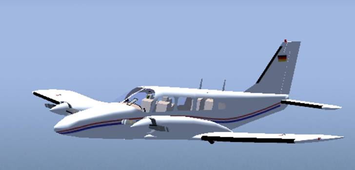
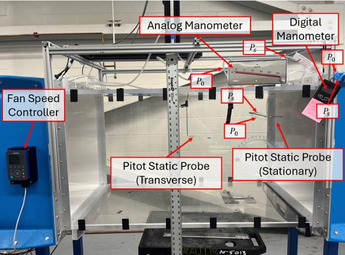

Aircraft Stability & Control Simulation
- Designed a subsonic aircraft and computed aerodynamic derivatives using both analytical methods and USAF DATCOM.
- Built a full MATLAB/Simulink model and integrated lookup tables for realistic flight simulation.
- Visualized control maneuvers and aircraft behavior in FlightGear.
- Validated lateral and longitudinal stability and confirmed effective pitch, roll, and yaw control responses.

Wind Tunnel Drag Study: Flap Deflection
- Conducted wake survey using a pitot-static probe on a 2D NACA 4412 wing with flaps at five deflection angles (0°–50°).
- Calculated drag using trapezoidal integration in MATLAB from measured velocity deficits.
- Observed drag increase with flap angle, confirming aerodynamic theory with a small anomaly at 25°.
- Addressed structural challenges in mounting and accounted for measurement uncertainties during analysis.

Aircraft Wing Structural Analysis
- Modeled a full aircraft wing with spars, ribs, stringers, and skin using Fusion 360.
- Exported geometry to FEMAP and performed FEA in NX Nastran under aerodynamic load conditions.
- Validated mesh quality with Jacobian > 0.6 and displacement of 0.15 in max.
- Interpreted stress contours and displacement plots to assess structural performance and stiffness.
Database Application for Aircraft Fleet Selection
- Developed a MATLAB database application for airline owners to interactively manage and select their aircraft fleet.
- Integrated with an Excel database for sorting, searching, filtering, and viewing aircraft data, reducing data retrieval time by 25%.
- Used MATLAB's data visualization features to present information in tables and graphs, aiding data-driven purchasing decisions.